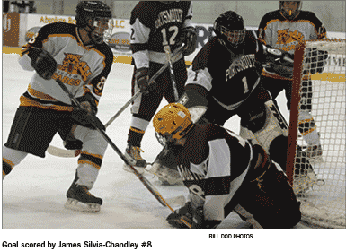
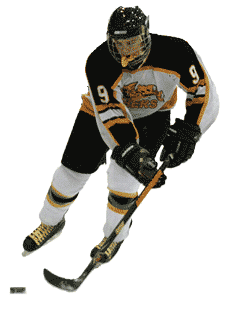
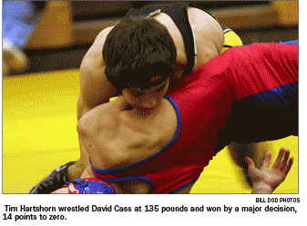
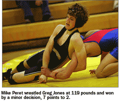
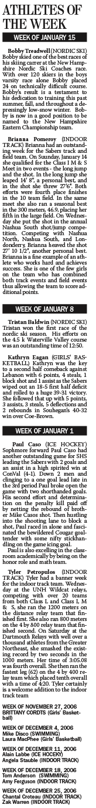
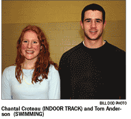

Skating Sabers Sink Clippers 14-5
On Wednesday evening at Conway Arena, SHS defeated Portsmouth HS two touchdowns to five.
In an offensive explosion for the ages, the black & gold came out firing with Alain Labbe leading the way with 5 goals and Captain Mike Caso netting 3 for the hat trick.
Also chipping in for SHS in the scoring column was TJ Dineen (2 goals), Paul Caso (2 goals) , Adam Mendenhall and Cole Johnson with single tallies.
Goalies Joey Giarrusso and Nate Downer were credited with 27 saves, while the tandem of Mendenhall and Jamey Silvia-Chandley continue to frustrate opponents with their relentless defensive pressure.
The Sabers skate again at John Stark HS on Wednesday evening at the New England College rink in Henniker at 7:15 PM before returning to home ice on Saturday versus Kennet HS at 3:50 PM.
Souhegan 5 / Pembroke 3
On Wednesday night at the Tri Town arena in Hooksett the Skating Sabers outlasted the Spartans of Pembroke Academy by a score of 5-3.
Leading the way for the black & gold was senior captain Mike Caso with 2 goals and 2 assists. Not to be outdone by big brother, sophmore forward Paul Caso chipped in with a goal and 2 assists. Alain Labbe added his team leading 10th goal of the season to spot SHS an opening lead with a pretty short side tally. Jamey Silvia-Chandley also lite the lamp with his patented spin o rama from in the slot. Other helpers went to Adam Mendenhall and Shea Burke. Special recognition for the game goes to the defensive pairing of Burke and Geoff Crawford and the defensive play of forwards Mendenhall and Silvia-Chandley. Goalie Joey Giarrusso was solid in the pipes with 27 saves for the victors.
Somersworth 3 / Souhegan 1
With heavy hearts due to the tragic passing of Team USAs Brian Doucette, the Hilltoppers and Sabers staged an epic battle of Division 3 powers on Saturday night in Rochester.
After a scoreless 1st period, TJ Dineen posted the Sabers to a 1-0 lead with a nice rush and a swift back hander that fooled Somersworth goalie, Derek Lambert (36 saves). The Hilltoppers would then tie it up on a shorthanded tally by Bryan Hogan and then take the lead with only 13 seconds remaining in the period off a funny bounce in front.
Despite tremendous pressure in the 3rd stanza the Sabers were unable to find the back of the net against the blue & white. At 9:35 of the period Somersworth would net a disputed goal with the Souhegan net displaced from it’s hinges.
Goalie Joey Giarrusso was outstanding for the Black & Gold with 27 quality saves.
Special recognition goes to the defensive pairing of Dineen and Larry Engholm, and defensive forwards Adam Mendenhall and Jamey Silvia-Chandley.
Team USA members Dineen and Mike Caso were courageous in their game participation after having attented the wake and funeral of their fallen friend and teammate.
Souhegan High School Sabers Wrestling
2006-2007 Season
John Stark Regional High School
Final Score: Souhegan: 27 — John Stark: 43
Dylan Shulze wrestled Morgan Bellanger at 103 pounds and won by a technical fall (15 points to zero)
Ben Glassman wrestled Eric Avard at 112 pounds and lost by a minor decision, 6 points to 2
Mike Peret wrestled Greg Jones at 119 pounds and won by a minor decision, 7 points to 2
Steven Briggs wrestled Keith Morrill at 125 pounds and lost by pin at 2:33 in the second period
Joel Griffith wrestled Rob McCoddle at 130 pounds and won by a minor decision, 6 points to zero.
Tim Hartshorn wrestled David Cass at 135 pounds and won by a major decision, 14 points to zero.
Curtis Hartshorn wrestled Luke Morris at 140 pounds and lost by pin at 1:45 in the first period.
Jesse Anderson wrestled Keith Demore at 145 pounds and lost by pin at 1:57 in the first period.
Matt Desseurault wrestled John Richardson at 152 pounds and won by pin at :34 in the first period.
Fraser Tibbetts wrestled Dennis Strenghill (sp?) at 160 pounds and lost by a major decision 13 points to 5.
Dan Foster wrestled Adan Lantine at 171 pounds and lost by pin at :21 in the first period.
Colin Cray wrestled Eric Lantine at 189 pounds and lost by pin at :28 in the first period.
Andrew Crook received a forfeit at 215 pounds.
Sean McLaughlin wrestled Joe McClain at 285 pounds and lost by pin at 1:23 in the first period.
SHS Basketball
Girls Fall to Bow 67-54
Sabers Kathryn Eagan posted a game high 16 points with teammate Brittany Cordts adding 14 as the girls basketball team was beaten at home by Bow 67-54 on Friday, Janueary 19. The Sabers rallied in the fourth quarter but were unable to overcome the 13 point lead that Bow posted at halftime. The Sabers season record is 8-4.
Boys Beaten by Bow 56-32
Traveling to Bow on Friday, January 19, the Sabers suffered a loss at the hands of Bow 56-32. Thomas Wilbur and Steve Daigneau both scored nine points for Souhegan and Mike Dwinell and Stephen Albano added three each. The Sabers record is 1-7.
Souhegan Indoor Track and Field
Sabers Qualify for Class I Meet
The Souhegan Sabers competed with over thiry track teams at the jam- packed UNH facility on January 21. No team scores were kept in the meet billed as a qualifying meet for the Class Meets scheduled in two weeks.
Notable performances were recorded in several events for the Sabers. The tandem team of Tyler Petropulos and Angela Stauble led the way with a photo finish in the 600 meters with Tyler being the victor with 1:45.5 and Angela back two tenths of a second. They also teamed up with Laura Tebbetts and Mollie Raymond to record the fastest time of the day in the 4 by 160 relay - 1:28.4. That time is the fastest time by the Souhegan girls’ team in over ten years, nearly eclipsing the school record of 1:28.0. That time will also seed them at or near the top for the Class Meet.
Other top performances by the Sabers were Chandler Wallisch, fourth in the shot at 31’ 0” and Chantal Croteau, fifth in the 1500 meters with a time of 4:57.8. Teydin Hall recorded a sixth place in the 300 meters with a seasonal best of 45.5. The other placement in the top six for the girls’ team was the 4 by 400 relay squad of
Molly Mirhashem, Brianna Pomeroy, Amy Ferguson, and Teydin Hall with a clocking of 4:34.6. In the boys’ meet Zak Warren recorded fourth place finishes in the high hurdles(8.5) and high jump(5’ 10”0, and Jon Harris placed sixth in the long jump with a season best of 19’ 2”. The boys’ 4 by 400 team of Jon Harris, Ben Lawrence, Sam Lawrence, and Spencer Bapst ran well finishing sixth in 3:50.1.
The teams travel to UNH again next week for the final qualifying meet, then the Class Meet will be held at Dartmouth on Friday, February 2.
Souhegan Track and Field at I-M-S Invitational
Souhegan track and field teams competed at the New Hampshire Class I M & S Invitational at the University of Southern Maine in Gorham, Maine on Sunday, January 14. Although accurate scores were not immediately available at the conclusion of the meet, it appears that the Sabers, both boys and girls, were second in the field of ten teams. Oyster River teams were first and Portsmouth and Bow trailed the Sabers followed by St Thomas, Sanborn, Milford, and three other teams.The girls’ team had four first places in the meet. Angela Stauble won the 600 meters (1:41.4), Chandler Wallisch the shot (31’ 6”), Tyler Petropulos the 300 (43.86), and Angela, Tyler, Molly Mirhashem, and Chantal Croteau were first in the 4 by 400. Chantal Croteau also took back her record in the 1000 meters, from Tyler Petropulos, with a fine time of 3:03.95, good for second place. Other point getters for the girls’ team were Arianne Bennett, third in the 600(1:57.26), Amy Ferguson fifth in the hurdles(9.9), Brianna Pomeroy fourth in both the shot(27’6”) and the long jump(14’ 8”), Mollie Raymond, fifth in the dash(7.8), and Kathleen McNary sixth in the 600(2:06). The boys’ team was led by Zak Warren, first in the hurdles(8.6) and tied for fourth in the high jump(5’ 4”). Jon Harris also placed well with a second in the high jump(5’ 6”), second in the long jump(18’ 10”) and he ran an excellent leg on the 4 by 400 team, with help from Ben Lawrence, Paul Thibodeau, and Spencer Bapst; they were also second. Ben also placed fourth in the dash(6.8). Both teams will continue their season next Saturday at UNH.
Indoor Track at UNH Relays
The Souhegan High School Boys Indoor track team competed at the Wildcat Relays at UNH Wednesday, January 10. The boys 4x 160 relay team of Matt Eusebio, Jon Harris, Zak Warren and Ben Lawrence set a new school record of 1:19.9 placing 6th out of 29 teams. They also placed 7th out of 25 teams in the shuttle dash with a time of 28.0. The Shuttle dash B team of Grant Raymond, Paul Thibodeau, Matt Chareth and Jake Landry placed 17th clocking a time of 29.9 seconds.
The distance medley relay team of Spencer Bapst who ran the 1200, Jake Landry who ran the 400, Paul Thibodeau who ran the 800 and Chris Merra who ran the 1600 placed 13th out of 17 teams clocking a time of 12:58.5.
Souhegan High School Nordic Team
Ransmeier & Spellman NH Series Race 5K Skate Race Results
Place: White Mountain Regional High School, Whitefield NH
Date: Saturday January 20,2007 Distance: 5K Skate
A Boys team results:
1. Kennett 38.0
2. Hanover High 48.0
3. Holderness 57.0
4. Hopkinton 76.0
5. Souhegan 97.0
6. Lenanon 103.0
7. Concord High 104.0
8. Fall Mountain 112.0
9. Gilford High 126.0
10. Bow 144.0
11. Keene High 148.0
12. Manchester Center 180.0
13. Plymouth Region 190.0
14. Manchester West 195.0
15. Derryfield 239.0
15. Kingswood Region 244.0
16. Kingswood Region 244.0
17. Newfound 245.0
SHS:
12. Tristan Baldwin 14:14.9
24. Bobby Treadwell 15:18.8
44. Josh Locke 16:38.1
52. Jon Roberts 17:02.1
82. Nick Sumski 18:58.2
88. Hayden Melton 19:19.9
B Boys Results
SHS:
13. Chad Flanders 18:14.4
15. Zeke Clements 18:39.5
23. Chris Kokko 19:22.1
35. Gabe Unger 20:54.8
48. Chris Unger 22:51.6
65. Sam Lowell 24:56.1
99. David Arsenault 36:09.8
102. Nick Murphy 39:55.8
A Girls Team Results:
1. Hanover High 40.0
2. Hopkinton 43.0
3. Gilford High 48.0
4. Kennett 79.0
5. Lenanon High 88.0
6. Souhegan 109.0
7. Interlakes 116.0
8. Fall Mountain 122.0
9. Concord High 158.0
10. Plymouth Region 162.0
11. Bow 176.0
12. Keen High 177.0
13. Manchester West 187.0
14. Kingswood Region 202.0
15. Manchester Center 205.0
16. Moultonborough A 212.0
17. Derryfield 222.0
18. Manchester Memorial 282.0
A Girls Results:
SHS:
26. Kelsie Helberg, 18:35.9
28. Emma Ruddock, 18:56.6
38. Kyle Gaffney, 19:40.5
64. Rachel Sammis, 21:56.1
B Girls Results:
SHS:
62. Charlotte Foley, 28:30.0
64. Marissa Ashcraft, 28:43.8
99. Meredith Foley, 33:32.0
130. Nicole Lamanna, 40:57.9
Boys JR Class II Results:
SHS:
56. Sam Lowell, 24:56.1
66. David Arsenault, 36:09.8
68. Nick Murphy, 39:55.8
Girls JR CLASS II Results:
SHS:
63. Marissa Ashcraft, 28:43.8
84. Meredith Foley, 33:32.0
99. Nicole Lamanna, 40:57.9
Waterville Valley, Jan. 11
Classic Race results Boys:
1. Tristian Baldwin,
Souhegan 0:14:20
2. Bobby Treadwell,
Souhegan 0:15:59
3. Chris Brockett, Gorham 0:16:20
4. Josh Locke, Souhegan 0:16:55
5. Dan Huntington, Profile 0:17:04
Other Souhegan racers:
- Jon Roberts
- Nick Sumski
- Chad Flanders
- Zeke Clements
- Hayden Melton
Boys Team score:
1. Souhegan 389
2. Profile 372
3. Derryfield 345
4. Moultonborough 339
5. Gorham 262
6. Sant Bani 262
Girls:
1. Kelsie Helberg, Souhegan 0:18:40
2. Sarah Brockett, Gorham 0:19:08
3. Kyle Gaffney, Souhegan 0:20:18
4. Paige Houliham,
Derryfield 0:20:42
5. Emma Ruddock,
Souhegan 0:20:54
Other Souhegan racer:
- Rachel Sammis
Girls Team score:
1. Souhegan 380
2. Moultonborough 359.5
3. Gorham 359
4. Derryfield 351
5. Sant Bani 184.5
6. Profile 95
Nordic Skate 4.5K
The Saber Nordic Boys team did very well in this first race of the season finished second place in total team score. Tristian Baldwin captured the first place with 12:40 in time.
Top Five Boys
1. Tristian Baldwin,
Souhegan, 12:40
2. Chris Brockett, Gorham, 12:56
3. Brian Rowe, Hopkinton, 13:21
4. Matt Helrich, Hopkinton, 13:28
5. Brad Ramsdell, Hopkinton, 13:36
Other Souhegan racers:
6. Bobby Treadwell 13:38
10. Josh Locke 14:33
26. Jon Roberts 15:35
Boys Team Results:
1. Hopkinton 385
2. Souhegan 370.5
3. Concord 361.5
4. Bow 348
5. Gorham 329
Top Five girls
1. Jenny Helm, Hopkinton, 15:04
2. Leah Hart, Interlakes, 15:18
3. Sarah Brockett, Gorham, 15:21
4. Jess Partlow, Hopkinton, 15:51
5. Sarah Gilroy, Hopkinton, 16:15
Souhegan racers:
7. Emma Ruddock 16:50
8. Kelsie Helberg 17:03
21. Kyle Gaffney 18:53
Girls Team Result:
1. Hopkinton 388
2. InterLakes 345
3. Concord 343.5
4. Gorham 333
5. Bow 319
6. Moultonborough 309
7. Derryfield 303
8. Souhegan 271
9. Sant Bani 160.5
SABER SPOTLIGHT
High School Announces Homestead Grocery and Deli December Athletes of the Month
The Souhegan High School have selected Tom Anderson (SWIMMING) as the male and Chantal Croteau (INDOOR TRACK) as the female HOMESTEAD GROCERY AND DELI athlete of the month for the month of December ... winners of the awards are selected by a committee ...the individuals must have sustained or improved academic achievement in the classroom, must have excelled on the field of play during the previous month and the individuals must demonstrate coachable both on the field and in the classroom ...
Tom Anderson (SWIMMING) Tom has really added speed to the Sabers team. In the past 2 weeks Tom has been a double winner in his events the 50 and 100 free as well as leading both 200 free and 200 IM relays to wins. Tom also holds school records in the 100 free, 50 free 200 free relay and 200 IM relay. Tom is having a great year, qualifying for state championships and pushing the limit on breaking one of his records from last year. In the Hollis/Brookline no one could come close and the other Souhegan swimmers helped him sweep the 50 free and 100 free events. Tom will make this an exciting year.
Chantal Croteau (INDOOR TRACK) Chantal set a school record in the 1500 meters on Saturday, December 30 at UNH. Her time of 5:03.9 was a second faster than her existing record of a year ago, and was strong enough for a third place finish in the tough race. She also ran the 1000 meters and finished third in that race. Her doubling up with both events enabled the team to finish second in the eleven team meet.
SABER SPOTLIGHT
New Hampshire Commission on Status of Women Recognizes Young Women Student Athletes
Concord, NH – The New Hampshire Interscholastic Athletic Association and New Hampshire Athletic Directors Association will hold the 20th Annual New Hampshire High School Female Athletic/Academic Award Program on Monday, February 5 at 11:00AM. The event will be held at the Capitol Center for the Arts in Concord.
NHIAA high school females from throughout New Hampshire will be recognized for achieving academic and athletic excellence. Award recipients are nominated each year by their school principals based on criteria which requires the high school seniors have a B+ grade point average, letter in at least two varsity sports, participate in community service activities and serve as a role model to her peers. At the awards ceremony, each student will receive an award certificate and a commemorative pin. Governor John H. Lynch has been invited to give the welcoming address and congratulate the more than 645 young female scholar athletes.
The recipients from Souhegan High School are Elizabeth Agens, Tamara Bender, Kathryn Buonadonna, Mary-Catherine Citarelli, Meagan Comstock, Bettina D’Andrea, Amy Ferguson, Haley Hewett, Lauren Hill, Laurie Kellndorfer, Molly McNary, Christyna Nagle, Jessica Panasiti, Angela Stauble, Kelly Sullan and Kathryn Wilkins.
Outstanding Performances
Souhegan JV Boys Basketball
On Friday January 19th the Souhegan JV Boys Basketball team traveled to Bow High School where they defeated the Falcons 51-29. The Sabers played uptempo offense and applied full court pressure defense which led to the win.
Souhegan was led by Mike Bolton’s 14 points along with 8 points each from Eric Parolin, DJ Petropulos and Joe Ehlich. Matt LeNeve came off the bench to contribute 5 points with Sam LaForet and Jeremy McGuire each chipping in with 4 points.
After playing 5 of their first seven games on the road, the Sabers look forward to a 4 game homestand beginning on Tuesday, January 23rd.
FRESHMEN BASKETBALL
The 2006-2007 Souhegan freshmen team is off and running. The team continues to show great improvement, with some big wins. The class I Souhegan team takes on many class L schools. The team has shown a great deal of “Saber Pride”! Coached by Todd Zingales, this fast-paced team plays an exciting brand of basketball. This year’s team includes; Nishon Radhakrishnan (co-captain), Eric Nelson, Nate Marcucci, Sean Cultrera, Evan Ginga, Bobby Johansen, Alex Lyon, Tyler Wing (co-captain), Brennan Kerrigan, Igor Nikolenko, Sam Protzmann, Evan Green, and Jaffet Gil. Check the Souhegan basketball web site for all games and times.
INDIVIDUALS with OUTSTANDING WEEKS
Mike Caso (ICE HOCKEY) Look out D3, Senior Captain Mike Caso is hot. Mike has found his scoring touch and netted 5 goals and 4 assists this week in victories over Pembroke (5-3) and Portsmouth (14-5). Mike continues to be amongst the best players on the ice for SHS and leaque wide in every game. His hustle, back checking and puck possesion is fantastic.
TJ Dineen (ICE HOCKEY) The Jr. Defenseman had an outstanding week for the skating Sabers scoring SHS lone goal in a narrow 3-1 loss to Somersworth on a magnificent coast-coast rush and netting two goals against Portsmouth in a 14-5 rout. TJ is playing outstanding hockey in every zone and has been a rock solid physical presence on the blue line. TJ is playing some of the best hockey we have seen from him in the Sabers black & gold.
Alain Labbe (ICE HOCKEY) Alain netted 6 goals and 2 assists this week in wins over Pembroke (5-3) and Portsmouth (14-5). With a monster 5 goal game versus Portsmouth, Alain demonstrated that he is one of the penultimate power forwards in the division. With bone charring checks on Clipper star Tyler Schwartzmiller and strong on face offs, Alain has notified the leaque that Souhegan will be a force to be reckowned with down the stretch.
Ben Lawrence (INDOOR TRACK) Ben continued his fine sprinting for the track and field team this week. On Sunday competing with ten other Class I M & S teams at Southern Maine University in Gorham, Maine he finished fourth in the 55 meter dash with a quick 6.8 in the 55 meter dash. He also ran the second fastest time on the 4 by 400 relay team, and that team was a strong second in the large meet. On Thursday at the mini-meet held at the Hampshire Dome, Ben stepped out of his usual sprinting shoes into middle distance with much success. He ran the fastest leg (2:15) on the 4 by 800 meter relay team, allowing that team to run a combined time of 9:30.3, their best time of the year. Ben’swillingness to run events out of his comfort zone shows a positive team commitment.
ANNA BOLTON (Girls’ Basketball) - Anna scored a team- and season-high 11 points on 4 of 5 shooting and added 3 assists in the Sabers blowout win over ConVal. On Friday Anna contributed 5 points and had 3 assists as a tough Bow team defeated Souhegan.
CARLEE BRION (Girls’ Basketball) - In Carlee’s first varsity game since returning to Souhegan, she scored 10 points and had 4 rebounds and an assist in the win at ConVal. On Friday, she scored 3 points and played solid defense in the Sabers loss to Bow.
KATHRYN EAGAN (Girls’ Basketball) - Kathryn had 3 points, 2 rebounds and an assist as she was part of a solid all-around team effort in Souhegan’s 30-point win at ConVal. On Friday she poured in a team-, season-, and career-high 16 points to go along with 3 assists and some solid defense as she led a second half comeback that unfortunately fell short as the Sabers lost to a tough Bow team.
Kelsie Helber (NORDIC SKI) In Saturday’s New Hampshire Nordic Coaches race Kelsie Helberg cracked the top 25, placing 24 out of a field that included female competitors from all New Hampshire public and private high schools. Despite the difficult course Kelsie managed to stay on top of her technique and successfully navigate the tricky turns and downhills. Kelsie helped lead her team to a 5th place finish out of the 18 scoring schools.
LINDSAY BOCK (Girls’ Basketball) Lindsay scored two points, grabbed 5 rebounds, and added 2 steals and an assist in Souhegan’s comeback victory over Lebanon. On Friday, although she only scored 2 points, she grabbed a career and team-high 10 rebounds while also dishing out 4 assists. Lindsay added 2 steals and a blocked shot while playing every minute of the second half.
Grant Davis (SWIMMING) Grant has added great depth to the team this year. Grant picked up 2nd place in the 200 free, 100 back and 100 free at our last two meets. Grant is part of many of the sweeps the Sabers have in the 100 free and 100 back events. He works hard during both in his practices and at all the meets. Grant will be with the team at NHIAA states in the 200 free and is close in the 100 free and 100 back. There is no event Grant is afraid to take on and is willing to swim the short events as well as the long distance event. Grant had is best times at Goffstown and lead the 4x100 relay to a first place.
Emma Roddock (NORDIC SKI) Emma finished seventh in the first race of the nordic ski season. Her efforts on the 4.5 k course against 9 teams at Waterville Valley was 16:50.
TORY SONTAG (Girls’ Basketball) In the Sabers’ big win over Lebanon, Tory scored 2 points, grabbed a team-high 7 rebounds and added two assists. On Friday, Tory got the team off to a quick start in the first half as she scored 9 points and added 2 rebounds and a steal as Souhegan defeated Coe-Brown.
Marissa Soucy (SWIMMING) Marissa has always given extra to the team when she competes. Marissa has really grown on the team this year making states with the 50 free and soon to get in with her 100 free time. She works so hard in practice pushing herself as hard as all of the Animals in her lane. She had her best meet at the Goffstown meet pickup a 2nd and 3rd in her events and swimming her best times. Just as she puts effort into her individual events she adds speed to the relays. Her 4-x100 relay is consistently first or second in the meets with Marissa driving the team.
Comments? Suggestions? Email us: acitzn@aol.com
©copyright 2007 The Amherst Citizen